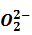

Compuestos binarios entre el anión peróxido:  y otro elemento. Para distinguir a los peróxidos de los óxidos debemos fijarnos en que el catión respete sus posibles números de oxidación.
FORMULACIÓN
La fórmula de los peróxidos es del tipo:
X2(O2)x
Si los números de oxidación son pares se simplifican los subíndices obligatoriamente. ¡Atención!, el anión peróxido (O2) no se puede simplificar.
En el caso de que el subíndice del O2 sea igual a 1 los paréntesis no se ponen a no ser que el elemento pueda tener número de oxidación igual a 4 y diferenciar, de este modo, al óxido del peróxido
Cu+2 + O2-2 -> Cu2(O2)2 -> CuO2
Ti+2 + O2-2 -> Ti2(O2)2 -> Ti(O2) dejamos los paréntesis para no confundir con óxido de titanio (IV)
NOMENCLATURA
NOMENCLATURA DE COMPOSICIÓN (PREFIJOS MULTIPLICADORES, ANTIGUA SISTEMÁTICA)
Utilizamos los prefijos multiplicadores (di-, tri-, tetra-…)., en el caso de que el O2, se multiplican ambos subíndices para calcular el número de átomos de oxígeno presentes. Si se quiere resaltar la presencia del peróxido se nombra entre paréntesis:
___ óxido de + ___ “nombre del otro elemento”
- Na2O2: dióxido de sodio o (dióxido) de sodio Ni2(O2)3: hexaóxido de diníquel
NOMENCLATURA DE COMPOSICIÓN (NÚMERO DE OXIDACIÓN, ANTIGUA STOCK)
También podemos utilizar el número de oxidación (Stock):
- Peróxido de , seguido del nombre del otro elemento.
- Si tiene más de un posible número de oxidación se escribe su valor entre paréntesis y números romanos (Sin dejar espacios, entre del elemento y el paréntesis).
peróxido de + “nombre del otro elemento”(x)
- Na2O2: peróxido de sodio Ni2(O2)3: peróxido de níquel(III)
NOMENCLATURA TRADICIONAL
Está en desuso. Se nombra igual que los óxidos, pero cambiando la palabra óxido por peróxido.
- Na2 02 : peróxido sódico Cu02 : peróxido cúprico Mg02 : peróxido magnésico
En el caso del H202, la IUPAC admite el nombre de peróxido de hidrógeno, cuyo nombre común es agua oxigenada.
|
FÓRMULA |
PREFIJO MULTIPLICADOR |
NÚMEROS OXIDACIÓN |
TRADICIONAL |
|
Ag2O2 |
Dióxido de diplata |
Peróxido de plata |
Peróxido argéntico |
|
Al2(O2)3 |
Hexaóxido de dialuminio |
Peróxido de aluminio |
Peróxido alumínico |
|
BaO2 |
Dióxido de bario |
Peróxido de bario |
Peróxido bárico |
|
CuO2 |
Dióxido de cobre |
Peróxido de cobre (II) |
Peróxido cúprico |
|
Cu2O2 |
(Dióxido) de dicobre |
Peróxido de cobre (I) |
Peróxido cuproso |
Si se quiere resaltar la presencia del peróxido se nombra entre paréntesis: